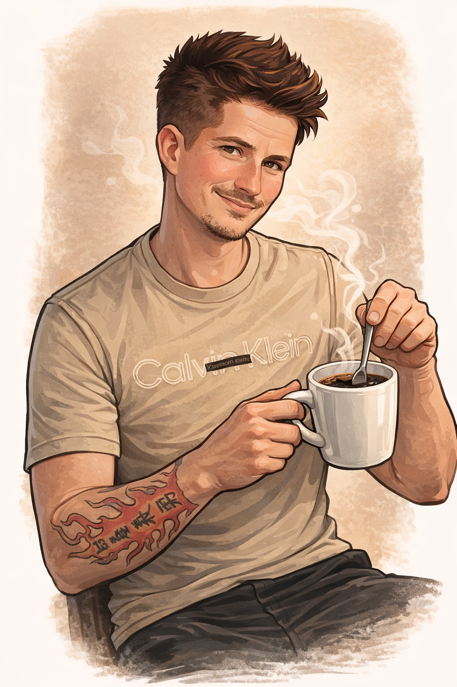

Stir My Coffee™
About This Project
About This Project
Stir My Coffee™ is a crowdsourced map where people can rate one simple thing: did the coffee shop actually stir your coffee?
The idea came after one too many drinks where all the syrup and cream were sitting at the bottom.
Anyone who drinks coffee regularly knows the experience — the first sip tastes like hot milk, and the last sip tastes like a sugar bomb.
At some point I realized this happens way more often than it should… and I’d probably stirred thousands of coffees myself.
So instead of complaining about it, I built something.
Stir My Coffee is meant to be simple, a little fun, and community-driven.
You can find coffee shops near you, vote on whether your drink was stirred, and help build a public record of coffee shop service based on real experiences.
Over time, it shows which places consistently get it right… and which ones don’t.
It started out of a bit of spite and frustration, but honestly turned into something I really enjoy working on.
You want a revolution? Start voting.
If enough people participate, we can start to see which places consistently get it right — and which ones don’t.
Maybe a few baristas start grabbing a spoon.

My name is Jon Scott, and I’m the developer behind Stir My Coffee.
I’m currently a student at Quinsigamond Community College and have always been into building things — especially programming, systems, and web projects.
Before getting deeper into tech, I spent years working in restaurants and professional kitchens starting when I was a kid.
In 2014 and 2015, I was ranked among the Top 10 Chefs in Boston by Thumbtack, where attention to detail in food preparation and service was part of the job every day.
That background is honestly part of why the unstirred coffee problem stood out to me in the first place.
Now I build projects like this — combining technology, real-world problems, and a little bit of humor.
Next time you grab a coffee, take a sip and ask yourself one question:
Did they stir it?
If not… you already know.
Stir My Coffee.